基于超辐射晶格实现Creutz模型中的平带局域化
所述论文
Flat-Band Localization in Creutz Superradiance Lattices
背景
紧束缚晶格：
具有平移对称性的系统在物理学中很常见，例如晶体中原子的周期性排列，当所有相邻位置的波函数的重叠很小以至于可以忽略时，波函数被认为在其晶格位置周围很好地局部化了，这便是紧束缚近似。
在这种近似中，波函数存在于空间中的离散点中，因此可以通过其晶格位置的索引来标记，其传输仅通过相邻格点的hopping发生。
平带：
平带是无色散的能带，其的一大特征是粒子的群速度为0，同时，由于平带上粒子有效质量很大，相比于动能整个系统会对一些特殊的势能非常敏感，这使得平带被认为是研究多体现象的理想体系。
对于平带的最简单构造，我们可以从孤立格点的情况考虑，当所有跳变都为0时，系统的单粒子定态薛定谔方程如下所示：
我们将整体的波函数用单个晶胞的波函数作为基展开，带入薛定谔方程中得到此时的特征值问题如下公式:
其中ϕ~nj~为第n个晶胞中第j个位点处的局域波函数。此时我们可以解出整个系统只存在j个无色散的平带。如图1，我们给出了两个位点孤立晶胞中平带的示意图。然而当晶胞之间越来越近时，它们之间的hopping项变得非零，此时平带便不能维持。

在实际问题中，除了孤立晶胞外，还有一些晶格中hopping项虽然不能忽略，但是由于晶格几何形状的对称性，从相邻位置跳变的波函数具有相等振幅的相反相位，由此产生破坏性干涉，结果，波函数被困在有限数量的格点中，在其他地方严格为0，这种严格定域状态被称为紧凑局域态（CLS），它会产生类似于孤立晶胞的效果。如图2是在笼目晶格上的CLS态与平带示意图。

论文概要
在该论文中，我们利用一束弱probe光和两束驻波coupling光在室温原子气体中模拟出了参数高度可调的Creutz型超辐射晶格。如图3所示为能级示意图，如图4所示为Creutz示意图。


我们发现其晶格能带具有一个平带和一个色散带，分别对应了局域化与非局域化。在实验中通过探测近邻格点的反射谱来探测晶格性质，通过改变晶格中耦合系数的相对大小可以选择性激发不同的能带，通过对晶格内闭合路径中相位的精确调节，可以调控平带的局域化性质。
体系的哈密顿量演化
阿哈罗诺夫—玻姆笼（Aharonov-Bohm Cages，ABCs）型超辐射晶格
有关体系的哈密顿量演化，我们首先写出其实空间哈密顿量：
引入集体激发算子：
得到其动量空间哈密顿量为：
其中为动量空间中的紧束缚晶格，为由原子热运动所引入的等效电场，表示probe光的激发项
此时在动量空间的紧束缚哈密顿量对应着一种名为阿哈罗诺夫—玻姆笼（Aharonov-Bohm Cages，ABCs）的晶格结构，如图5所示，晶格中间的有效磁场由驻波间的相位差决定。

Creutz型超辐射晶格
体系能带结构
我们在实空间中对对角化，以解出体系的本征能量与态矢
解之得
其中
可以看到其存在一条零能量平带与一条色散带
引入作为赝自旋基矢，则体系的两个本征态为：
能带图像
由此我们做出其在不同Ф与不同η下的能带图如图所示，我们定义为耦合强度比，其可通过调节两驻波的拉比频率来改变，从中可以看出，当η>>1时，子链b大都由色散带占据，反之则由零能量平带占据，色散带在Ф≠0或π时存在手性边缘流。
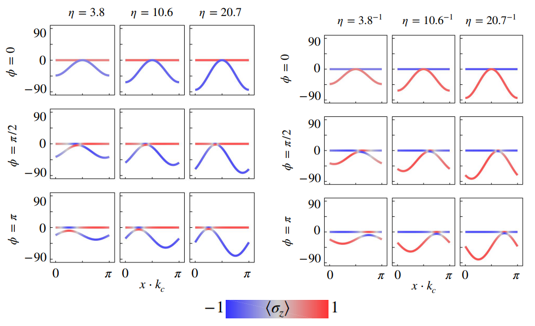
实验观测
实验装置
在我们的实验中，probe光和coupling光分别出自三个激光源，probe光的反射由光电探测器PD检测，我们通过反射镜上的压电陶瓷PZT调节波节或波腹的空间位置来对驻波的相位进行调制，同时为了满足相位匹配条件，probe光与两束驻波coupling光之间的相位是0.35°
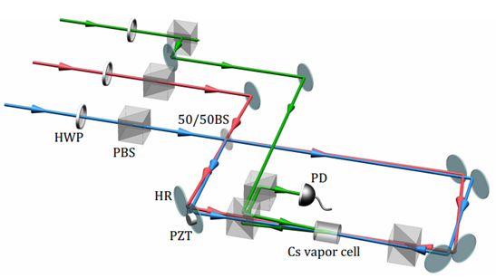
实验中所用的介质是,其耦合的能级图如图8所示：
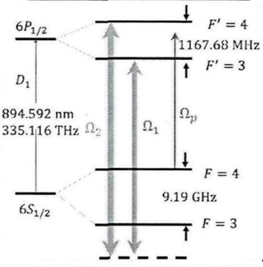
反射谱的观测
对于反射谱的观测，在实验中我们可以通过扫描probe光的失谐，来实现选择性耦合能级a或b，以此激发不同的能级。如图9所示，由于相位匹配条件只有与满足，因此我们需要观测这两点的反射信号，同时在该图中，对应着的是耦合强度比η远大于1的情况，此时色散带对应着b链，平带对应着a链，由于平带局域化的特征，在处的布居数很小，需要将信号结果扩大5倍画出来。
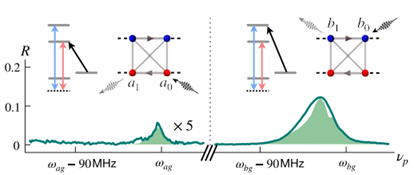
同时需要注意的是，由于该晶格哈密顿量的独特对称性，我们若互换t1,t2同时令Ф为补角，此时我们激发a链观测，也就相当于是激发b链观测。
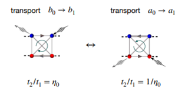
我们实验上主要观测B链，我们将不同耦合强度下的b链反射谱与相对应的体系能带图做对比，如图9所示，此时相位Ф为π，从上到下的耦合强度分别为20.7，3.8，1/20.7。
在实验中我们可以通过调节两束耦合光的功率改变η来控制哪一条能带主导b链动力学变化，当η>>1时，也即上面两幅图中，子晶格B大部分由色散带占据，因此此时反射谱主要由色散带决定；
反射谱的形状取决于不同频率下晶格内对应格点的传输概率，在η>>1时时可以看出主反射峰展宽约为色散能带展宽。而当η<<1时子链B大部分由零能量平带占据，此时其反射谱的主反射峰展宽极小，并且其峰值也极小，这分别体现了平带以及其局域化特征
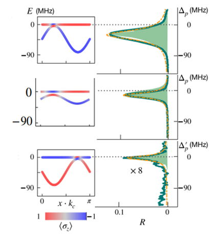
同时，我们需要考虑原子热运动的影响，同样的，只有当多普勒频移处于失谐范围的原子才会对反射谱产生贡献，我们将反射率在该范围进行平均，做出在不同耦合强度下，反射率随着相位的变化曲线如图12所示。
在失谐范围内平均的公式：
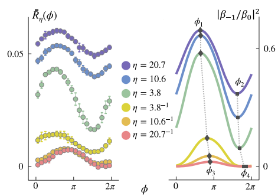
从中我们可以看出，反射率整体上随着Ф做正弦变化，对于η>>1的情况，此时反射率由色散带决定，这正好表明了色散带中手性边缘流的传输效应，当Ф∈(0, π)时手性边缘流朝着处移动，反射率增强，反之减小。
同时注意到图中，随着η的减小，平均反射率降低，并且反射率随Ф的正弦曲线呈现向右移动的趋势，这说明，平带与色散带对于磁场的响应是不同的，我们会在之后说明平带对于相位的响应机理。同时我们列出与b0的布居数之比，可以看到实验和理论比较吻合。
平带对于相位Ф的响应机理
为了说明平带对于相位的响应机理，我们首先列出平带的本征态，即Creutz晶格的CLS态。
我们列出零能量平带的本征方程，假设CLS态由晶格上有限个格点组成，由此得到其本征方程组，最终解出其在Ф=0与Ф≠0时的CLS态。
解得：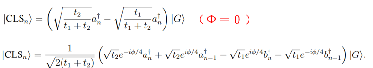
如图13为CLS态示意图，晶格中没有零振幅点的原因是我们模型在做二阶近似时将本来在晶格中心处存在的零振幅点C链消去了，但是并不影响晶格本身被局域化的事实
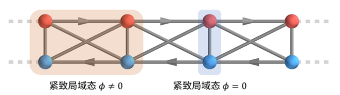
我们可以看到，随着Ф不同，紧致局域态也会不同，在Ф=0时的CLS态是只存在于一个晶胞的局域态，此时我们激发，只会有其相对应的紧致局域态被激发，尤其是当η>>1时，根据计算，此时的紧致局域态几乎就位于b链上，a链的振幅很小，此时激发几乎就相当于激发紧致局域态。在这种情况下局域化最大，到上的传播几乎无法进行。
然而当时的CLS态是占据了两个相邻晶胞的局域态，此时我们激发，则会同时激发与，此时在过程到，与过程到处的传播都不会是0。
这样我们就解释了平带对于相位的响应机理
四种典型子晶格中稳态
下面我们来看一下在四种典型格子上的稳态示意图
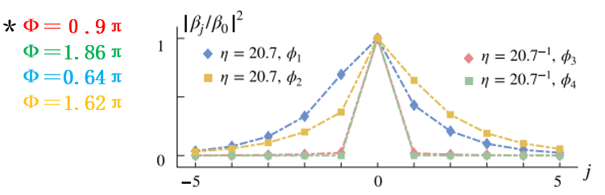
可以看到当耦合强度为20.7，probe光激发的能带主要是色散带，此时当Ф＝0.64π时晶格内的稳态倾向于向左传播，而在Ф＝1.62π倾向于向右传播，这体现了色散带中的手性边缘流的性质。
当耦合强度远小于1时，probe光倾向于激发平带，在Ф＝0.9π和Ф＝1.86π时均具有良好的局域性特征，并且Ф＝1.86π时局域性更好，这时因为此时CLS态只占据了一个晶胞，之所以是1.86π而不是2π，是因为在最后结果时仍存在少量色散带的印象。
利萨如图
最后我们做出利萨如图，来表征色散带与平带对于Ф的不同依赖。
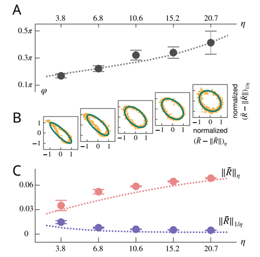
在图B中我们做出其利萨如图同理论比较，首先对二者的反射率做normalize以便让两个正弦曲线在同一个幅度。从图A中我们可以看出它们之间的相位差随η增加逐渐趋于π/2，这体现了二者对于相位的不同依赖。最后在图C我们看到在η>>1时平均反射率随η单调递增，在η<<1时单调递减，与理论吻合。
poster
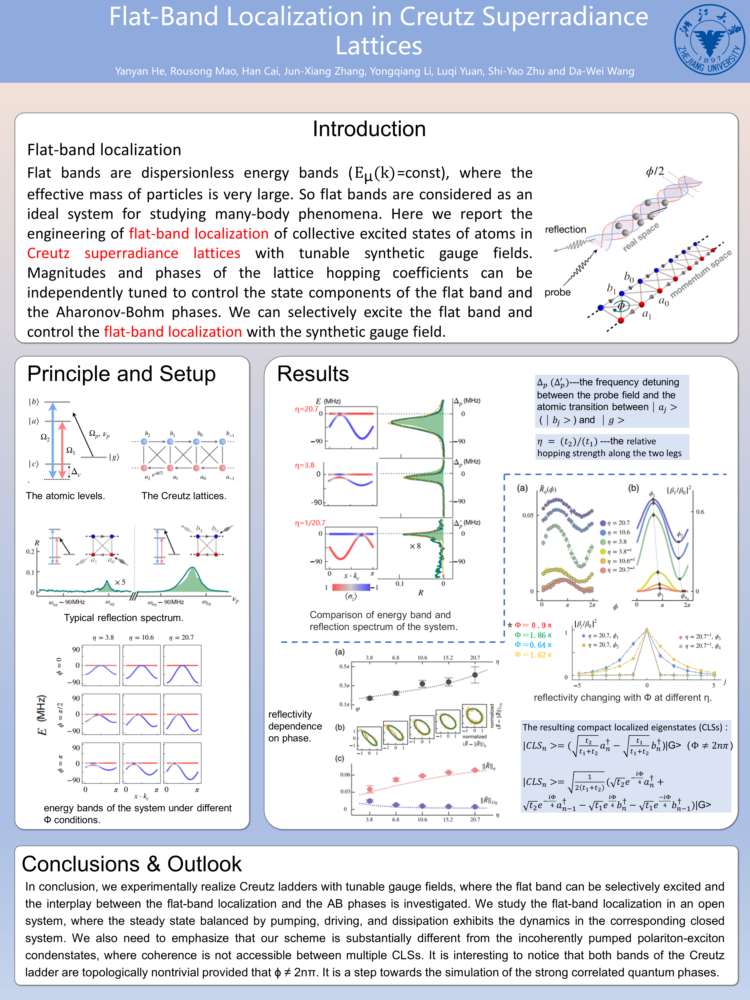